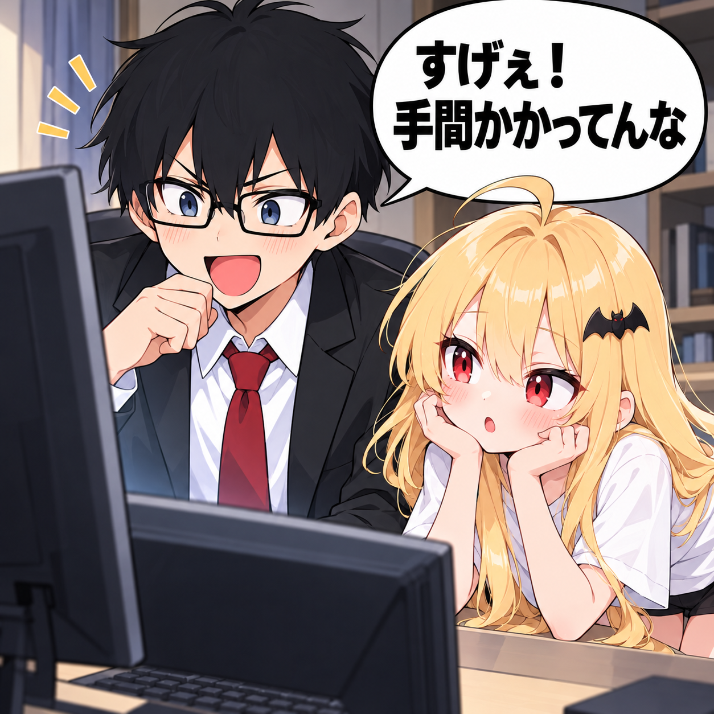
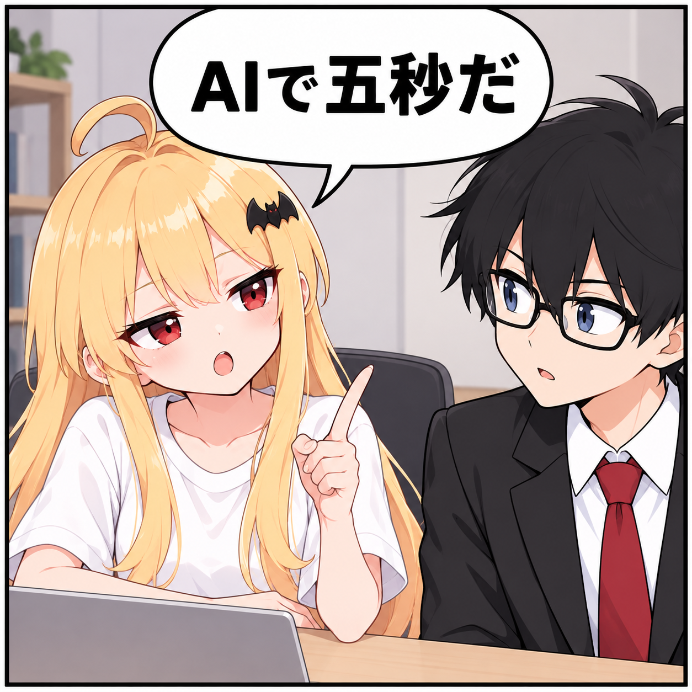
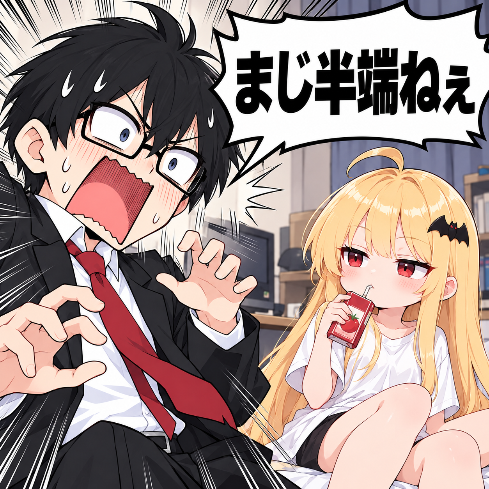
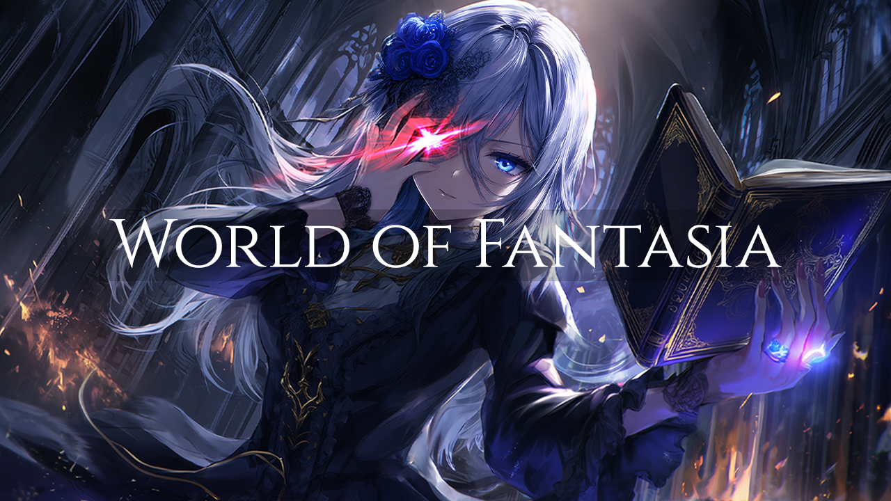

KNOWLEDGE IS POWER
WATCH
VIDEOS最新動画
MANGA
AIで公式サイト
横にスライドして読む →



CREATIVE / STORIES
CREATOR ｜ 作者
緋色牡丹
YouTube『雑学サバイバル』の漫画・物語を制作。雑学とユーモアを武器に、アニメ、ゲーム、さまざまな創作に挑戦しています。
THE ORIGINAL WORLD
NOVEL

WORLD OF FANTASIAWorld of Fantasia
World of Fantasia
ワールド・オブ・ファンタジア
雑学サバイバルの世界観の原点となったファンタジー作品。物語の始まりをカクヨムで読むことができます。
第一話「生きたかったのだろうか」を読む ↗